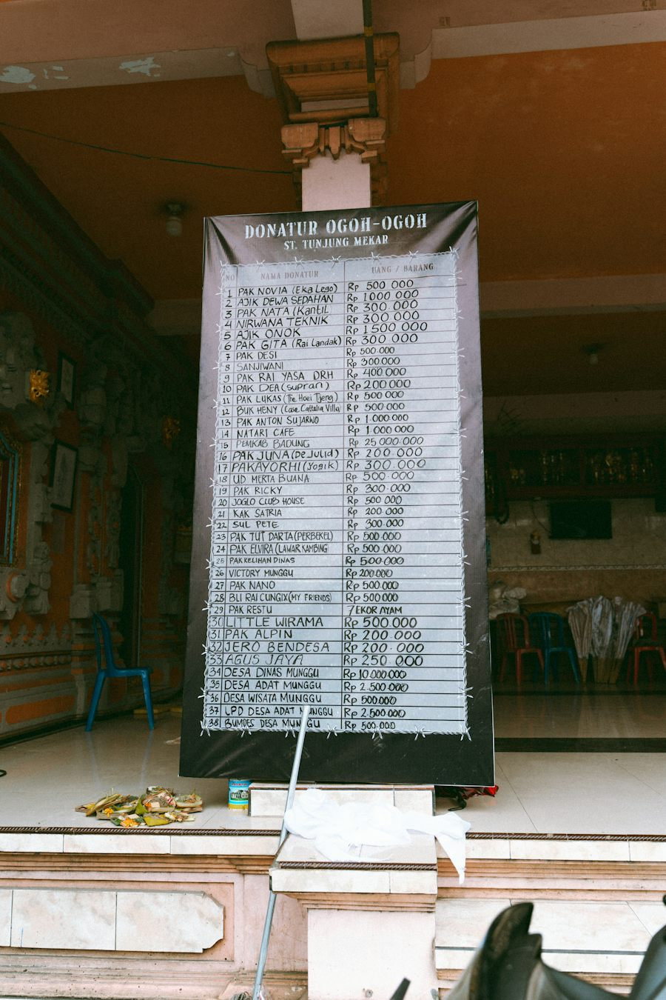

Ficha de sesión · S03 · solo docente
| § | Bloque | Min |
|---|---|---|
| 1 | Warm-up · Pick a proof · Three messages: total or date | 4 |
| 2 | Vocabulary · Sixty-Second Sell | 8 |
| 3 | Grammar · present perfect vs past simple · Bet the Sentence | 12 |
| 4 | Reading · Three files · Paper or work? | 7 |
| 5 | Speaking · Private order 3 · Team order 5 · Twist 3 · Six sentences 5 · 12 preguntas 5 | 21 |
| 6 | Wrap-up · back to your pick + exit | 8 |
| Total | 60 |
Warm-up · Total or date?
Pick one. There is no right answer. Then say ONE reason out loud.
Teacher notes · §1 Warm-up
Pedagógica
- Dos pasos. (1) El alumno ELIGE una prueba («certificate» / «examples of your work» / «real experience») y dice UNA razón: es postura, no hay respuesta correcta. Se recuerda para el cierre. (2) Tres mensajes de personas FICTICIAS: el alumno decide qué oración corresponde y la DICE. La pista es el mensaje: sin fecha → has / have + participio; con fecha → past simple. Los distractores son errores típicos del español: «has finished in March», «has complete», «never has used». El mensaje se clava en TOTAL o DATE solo después de «I said it ✓».
- Máx. 4 min. 30 s en silencio y luego habla sin leer. No expliques todavía: modela «has completed» y «finished in March» con pausa y señala las dos columnas. Seguro y Mild: sin datos personales.
- Grupo: cada persona toma un mensaje. 1:1: pide una segunda respuesta al mensaje 1 con otro verbo («She took the exam in March»).
Engagement
- Minuto 1: eligen una prueba. Cierre en voz alta: «Today I can say what I have done and when.»
- Pregunta puente: «¿En qué columna hay más mensajes? ¿Por qué?»
Crecimiento
- Anota qué prueba eligió cada quien: se compara con el orden de §5.
- Si alguien dice «I have finished in March», es la señal de la zona débil de hoy (se trabaja en §3).
Vocabulary · Sixty-second sell

Tap a word: meaning, example, sound.
Words opened 0 / 10Two words. Pick one. Sell it in 60 seconds.
Sold 0 / 3 · Bought 01. Read the situation. 2. TAP the word you pick. 3. Start the timer and SELL it: why this word, not the other. 4. Tick your boxes and tap “I sold it ✓”. 5. Your partner (or teacher) says if they buy it.
Teacher notes · §2 Vocabulary
Pedagógica
- Sixty-Second Sell (VOC-10, CONTRARRELOJ): el alumno elige entre dos palabras vecinas para una situación (certificate / diploma · earn / get · show / prove) y tiene 60 s para VENDER su elección: por qué esta palabra y no la otra. Cada duelo trae una pista «ammo» con palabras de la sesión (course paper, complete a course, degree, CV, real experience, examples of your work) que conviene usar. El grupo, o el maestro, «compra» la defensa. Si elige la palabra más débil, la app lo avisa pero puede venderla: lo que cuenta es la razón dicha en voz alta.
- Léxico: 10 ítems + 2 chunks (has completed, finished in…) = 12. Definiciones SIN cláusulas de relativo (veto del nivel). Máx. dos palabras sobre B1.1 [ESTIMACIÓN, cotejar con EVP]: diploma y prove. Pronunciación: certificate /sərˈtɪfɪkət/, diploma /dɪˈploʊmə/, degree /dɪˈɡriː/.
- Mic apagado: la venta cuenta solo con el cronómetro usado ≥10 s y ≥3 casillas. Setup ≤2 min (regla 3-3-3). Cierra en voz alta: «I sold N of 3 words and the group bought N.»
Engagement
- Rotación: VOC-10 abre por primera vez en el programa nuevo (CONTRARRELOJ). Es la primera dinámica con reloj corto: ríete cuando suene.
- Pregunta: «¿Qué palabra fue más difícil de vender?»
Crecimiento
- Anota qué palabras confundió: material para el repaso de S10.
- Las diez palabras reaparecen en los expedientes y en el orden de §5.
Grammar · present perfect vs past simple
Total up to now, or a finished date?
Date or finished time → past simple. Up to now, no date → have / has + participle. Do not mix them.
1 · Up to now (no date)
She has completed fourteen courses.
2 · A finished date
She finished the last one in March.
3 · Ask in two steps
Have you ever used a certificate? — When did you use it?
| Idea | Example |
|---|---|
| Total | I've taken three courses this year. |
| Never | He has never needed one. |
| Date | She finished the last one in March. |
| ? | Have you ever used a certificate? — When did you finish it? |
¿Qué es? El present perfect (has / have + participio) dice lo que alguien ha hecho hasta ahora, sin decir cuándo. El past simple dice algo terminado, con fecha.
¿Cómo se usa? Sin fecha: She has completed fourteen courses. Con fecha: She finished the last one in March. Pregunta de experiencia: Have you ever…? Pregunta de fecha: When did you…?
¿Para qué hoy? Para separar «lo que ha hecho» de «cuándo lo hizo».
Cuidado: en español se dice «¿Cuándo has terminado?», pero en inglés no: When did you finish? Tampoco has finished in March.
Six sentences. Correct or not? Bet first.
Points 01. Bet ✓ (correct) or ✗ (has a mistake) on each sentence. 2. Lock your bets. 3. Right bet: 2 points. A false alarm (✗ on a correct sentence): −1. 4. For each wrong sentence, SAY the correct version: +1.
Two questions for each person. Choose, say, listen.
Questions asked 0 / 6Teacher notes · §3 Grammar
Pedagógica
- UN solo punto de lengua: present perfect frente a past simple. Explicación docente ≤5 min (el Recap está en pantalla). Bet the Sentence (mecánica, 4 min = 1/3 del bloque) + Ask and answer (meaningful, 5 min). La parte comunicativa llega en §5. Sin reactivos con hueco.
- Bet the Sentence (GRM-01, APUESTA): seis oraciones, tres correctas y tres no. El alumno apuesta ✓ o ✗ ANTES de discutir. Acierto = 2 puntos; falsa alarma (✗ sobre una correcta) = −1; cada oración mala se corrige en voz alta = +1 (se gana puntos por PRODUCIR, no por rapidez). Ask and answer: con Pia, Beto e Ines el alumno elige y dice «Have you ever…?» y luego «When did you…?»; la persona contesta con el modelo. Errores previstos: «When have you finished», «Did you ever have taken», «has finished in March».
- Límite de nivel: sin present perfect continuous («I have been working» se corrige, no se enseña). Cierra en voz alta: «I got N points and I asked N questions.» Setup ≤2 min (regla 3-3-3).
Engagement
- Rotación: GRM-01 abre por primera vez en el programa nuevo (APUESTA); en S1 fue OCULTAMIENTO y en S2 IMPOSTOR (familias distintas). Escalación futura: S32–S33 (When have you started? como error forzado).
- Lleva el reloj: 4 min de apuestas, no más.
Crecimiento
- Los errores con «When have you…?» son material del cierre.
- Anota 2 errores reales (sin nombre) durante §5.
Reading · Three files
Which kind of proof does each sentence talk about?
Sorted 0 / 6One question about the three files.
Now you. SAY one sentence for each file:
Teacher notes · §4 Reading
Pedagógica
- Insumo, no examen: tres expedientes FICTICIOS de ≤60 palabras (máx. real ≈45), sin listening: la ficha del PDF define el input como tres expedientes. Cada tarjeta se lee y se puede ESCUCHAR con el botón. Después el alumno clasifica seis oraciones: «PAPER» (habla de un documento) o «WORK» (habla de trabajo real). No es pregunta de detalle de opción múltiple (ADN 8-oct): es clasificar y reutilizar. UNA sola pregunta de idea general.
- Para cerrar, el alumno DICE una oración con has / have y otra con fecha sobre cualquier expediente: es la antesala de §5. Distractores y datos inventados: las tarjetas dicen «fictional».
- En grupo: cada persona toma un expediente y lo cuenta a su pareja. En 1:1: el maestro elige el expediente que el alumno debe contar.
Engagement
- La clasificación PAPER / WORK prepara el orden de §5: el alumno ya vio qué prueba pesa más.
- Pregunta: «¿Qué expediente te parece más fuerte?»
Crecimiento
- Anota quién separa bien «has» y fecha sin ayuda.
- Los tres expedientes se reutilizan en la misión: nada nuevo que aprender.
Speaking · Blind ranking

Rank six ways to prove you can do a job. Then agree on ONE order and defend it.
Idea · Reason · Example · Result. Say: has / have + participle · past simple + date Done when: six sentences about two files: what they have done, when they did it, and why you put your order.
Group: teams of 2–3. Only the team order counts. Everybody must speak.
1:1: the teacher makes a private order too, and you agree on one.
Put the six proofs in YOUR order. Nobody sees it yet.
1 = the proof you trust the most. Use ▲ ▼. Think in silence for 30 seconds.
Now ONE order for the team. Only the consensus counts.
Open the twist. Then rank again.
Describe two files. Tap each time you say a sentence.
12 questions · always 2 follow-ups

Teacher notes · §5 Speaking
Pedagógica
- Blind Ranking (SPK-10, RANKING): cada quien ordena en PRIVADO seis pruebas: título, constancia, ejemplos de su trabajo, prueba práctica, referencia y experiencia. Después el equipo sale con UN solo orden: solo cuenta el consenso; obliga a justificar y a ceder en inglés. El alumno usa tres contadores (razones dadas, defensas, veces que cedió en inglés) y la pareja o el maestro escucha. Nada se puntúa por rapidez.
- Giro (tarjeta): en la prueba práctica, Nadia (catorce cursos) reprueba y Hugo (ningún certificado) aprueba: ¿sigue siendo el mismo orden? El alumno reordena y DICE qué movió y por qué. Seis oraciones (evidencia del PDF): describe dos expedientes separando lo que han hecho (has completed) de cuándo lo hicieron (finished in March), y defiende su orden con una razón. Marco Idea · Reason · Example · Result a la vista.
- 12 preguntas (todas con 2 follow-ups): elige 5 y registra 2 errores reales sin nombre. Rescate visible. Cierra con el resultado dicho en voz alta: «My team put … first and I changed … because…».
Engagement
- Anuncia el resultado: «Our order: 1 …, 2 …, 3 … Mission complete!»
- Pregunta final: «¿Quién cedió más? ¿Valió la pena?»
Crecimiento
- S4 sube la temperatura (Spicy): hoy ya practicaron ceder y justificar.
- Registra los casos reales que mencionan: buen insumo para la venta («¿qué prueba pide tu empresa?»).
Wrap-up · Better the second time
How did your session go?
Say two real sentences about you
Said 0✓ Success
↑ Upgrade
✎ Repair
↻ Next use
Use “Have you ever…?” and then “When did you…?” once in a real conversation this week.
60 seconds · 5 questions
Today I can…

You can say what happened up to now and when it finished.
Homework: write four sentences about your own studies or jobs: two with have / has + participle and two with a finished date (in 2019, last year). Next: Session 4.
Teacher notes · §6 Wrap-up
Pedagógica
- Máx. 2 aciertos y 3 correcciones de alto valor con los errores anotados en §5 (sin nombres). Resume qué prueba eligió cada quien en el minuto 1 y qué orden salió del equipo.
- Tarea: cuatro oraciones sobre sus estudios o trabajos, dos con have / has + participio y dos con fecha. Se revisa al inicio de S4.
Engagement
- Declaración final: «Today I can say what I have done and when.»
- Compara con §1: «Minute 1 you picked a proof. Minute 50 you ranked six and changed your order.»
Crecimiento
- Registra: palabras vendidas y compradas, puntos de las apuestas, preguntas dichas, orden privado y de equipo, contadores de las seis oraciones.
- «Next session: Session 4, Should Profitable Companies Lay People Off?» (Spicy: usa «the company of the case».)